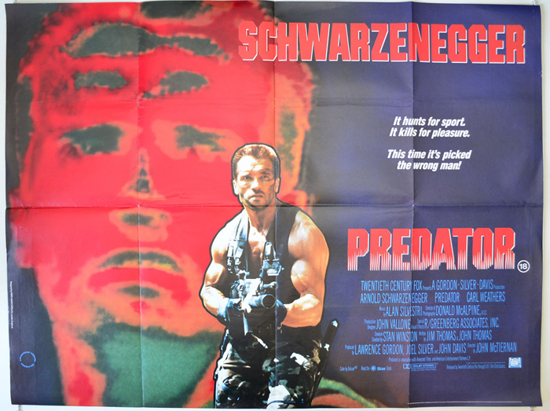

Big Buck Bunny
Big Buck Bunny (code-named Peach) is a short computer-animated comedy film by the Blender Institute, part of the Blender Foundation. Like the foundation's previous film Elephants Dream, the film was made using Blender, a free software application for animation made by the same foundation.
Silence of the Lambs Trailer
In the film, Clarice Starling, a young U.S. FBI trainee, seeks the advice of the imprisoned Dr. Lecter to apprehend another serial killer, known only as "Buffalo Bill". The Silence of the Lambs was released on February 14, 1991, and grossed $272.7 million worldwide against its $19 million budget.
Predator Trailer
Dutch (Arnold Schwarzenegger) and his elite commando team arrive in an unnamed Central American country. They meet a general, Phillips, whom Dutch has worked for in the past, and with a CIA agent, Dillon (Carl Weathers), whom Dutch also knows. Dillon tells Dutch that a high-ranking "cabinet minister" traveling by helicopter nearby has gone missing in the jungle, presumably shot down by a rebel guerrilla group operating in the area. Dutch's team has been charged with going over the border and into rebel territory to rescue the man.